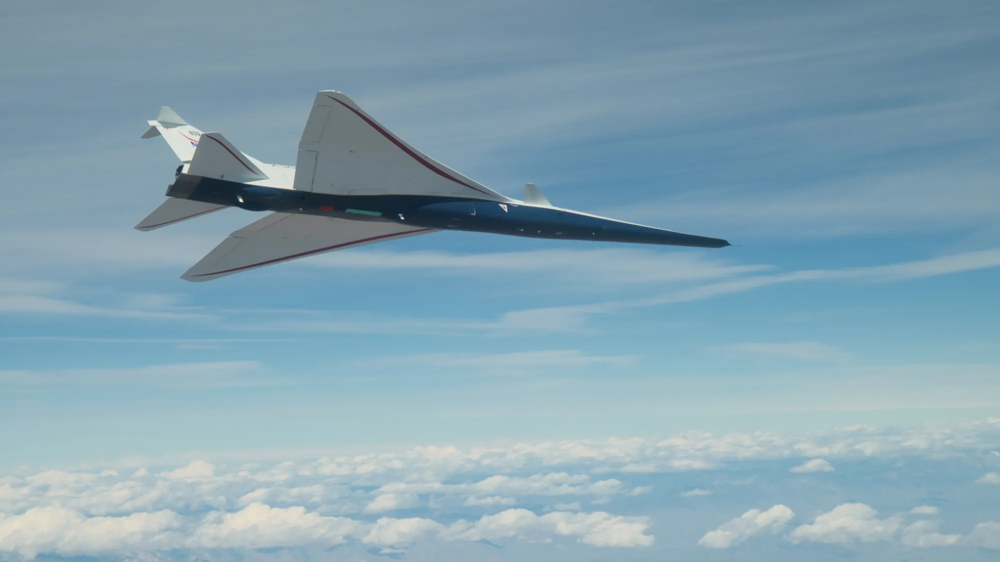

Giai đoạn phạm vi mở rộng quan trọng thế nào?
Giai đoạn mở rộng phạm vi hoạt động của bất kỳ máy bay thử nghiệm nào đều rất quan trọng, không chỉ để đẩy máy bay lên cao hơn và nhanh hơn, mà còn để hiểu cách máy bay vận hành trong khi bay. Khi máy bay thử nghiệm X-59 của NASA tiến triển qua giai đoạn mở rộng phạm vi hoạt động, nhóm nghiên cứu đang đánh giá dữ liệu thu thập được trong các thao tác cụ thể do phi công X-59 thực hiện trong khi bay. Điều này cung cấp cho các kỹ sư những hiểu biết quan trọng về hiệu suất của máy bay, xem xét động lực học cấu trúc, tải trọng và hiệu suất điều khiển bay.
LOẠI MÁY BAY
X-59
Được mệnh danh là "Mũi tên thầm lặng", thiết kế để giảm thiểu tiếng nổ siêu thanh khi bay trên đất liền.
Chuyến bay đầu tiên
X-59 bay qua khu vực Palmdale và Edwards, California trong chuyến bay đầu tiên vào ngày 28/10/2025, trước khi hạ cánh an toàn tại Trung tâm Nghiên cứu Bay Armstrong của NASA. Trong tương lai, NASA sẽ cho X-59 bay qua một số cộng đồng tại Mỹ và khảo sát phản ứng của người dân đối với âm thanh này.
.png)
Thao tác bay thử
Các phi hành gia và kỹ sư thử nghiệm thực hiện các bài kiểm tra nghiêm ngặt để đảm bảo an toàn tuyệt đối trước khi tiến tới các giai đoạn cao hơn. Chúng tôi mô tả một số thao tác thử nghiệm bay của X-59 trong loạt chuyến bay thử nghiệm đầu tiên ở đây:
Một số thao tác bay thử của X-59
Rollercoaster maneuver (lượn lên xuống): Máy bay liên tục ngóc lên rồi chúi xuống để phân tích lực khí động học và đánh giá độ ổn định.
Bank-to-bank maneuver (nghiêng cánh qua lại): Máy bay nghiêng sang một bên, sau đó quay lại trạng thái cân bằng rồi nghiêng sang bên còn lại.
Flutter excitation maneuver (kích thích dao động flutter): Cố tình tạo rung động trong cấu trúc để xác định giới hạn an toàn.
Wings-level push maneuver (chúi xuống khi giữ cánh ngang): Đánh giá độ ổn định dọc và phản ứng điều khiển.
Gear-extend maneuver (mở càng hạ cánh): Đo ảnh hưởng tới lực cản, độ rung và luồng không khí.
SỨ MỆNH
Quesst
Chương trình nghiên cứu hàng không nhằm mở ra tương lai bay siêu thanh thương mại trên đất liền.
Mở đường cho tương lai
Dữ liệu thu thập sẽ được gửi tới các cơ quan quản lý để cân nhắc việc cho phép bay siêu thanh trên đất liền.